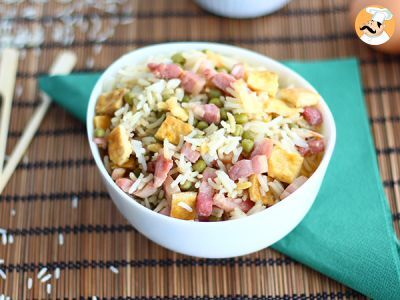

The Cantonese Rice

The Cantonese Rice is a very basic but very savorous Vietnamese Meal.
Composed of rice, peas, scrumbled eggs, ham and onions, it has everything for a healthy diet and very easy to make.
I will show you how !
Time preparation : 20 min
Ingredients :
- Rice basmatic 2 cups
- Ham 150gr
- 4 eggs
- Leeks 100gr (optional)
- Carots 100gr (optional)
- Peas 100gr
- 1 Onions
- Coriander
- Soja sauce
Process
- Add the rice in a pot with boiling water
- Cut the ham, onion, and other vegetables (carrots, leeks, onions) in small cubes
- Mix the 4 eggs in a bowl, add pepper and salt and put it in a oiled pan
- Stir it to make scrumbled eggs then take them out of the pan. Replace them with the sliced vegetables.
- When the rice is cooked, rince it and let it dry as much as possible
- Put it in a pan with oil at medium fire to fry it. Wait until it get crispy
- Once the vegetables are well cooked and the rice crispy, add the vegetables and the ham, and the eggs
- Finish the recipe by adding soja sauce on the rice, small pieces of coriander and any other condiments you might want
- Stir from time to time so the rice don't get stucked to the pan and is not burned
- Add oil on the whole mix if needed
- Serve it hot and...
- Enjoy !
Home